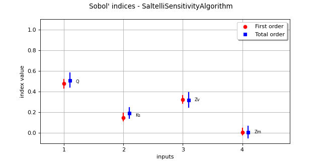

SobolIndicesAlgorithm¶
(Source code, png)
{kind=link}

- class SobolIndicesAlgorithm(*args)¶
Sensitivity analysis.
Notes
This method measures the influence of each component of an input random vector
 on an output random vector
on an output random vector
 by computing Sobol’ indices (see [sobol1993]).
It computes, for every output random variable
by computing Sobol’ indices (see [sobol1993]).
It computes, for every output random variable  (
( ),
the part of its variance due to each input component
),
the part of its variance due to each input component  (
( ) of
) of  .
Sobol’ indices are introduced in Sensitivity analysis using Sobol’ indices.
.
Sobol’ indices are introduced in Sensitivity analysis using Sobol’ indices.Several estimators of
 ,
,  and
and  are provided by the
are provided by the SobolIndicesAlgorithmimplementations:SaltelliSensitivityAlgorithmfor the Saltelli method,JansenSensitivityAlgorithmfor the Jansen method,MauntzKucherenkoSensitivityAlgorithmfor the Mauntz-Kucherenko method,MartinezSensitivityAlgorithmfor the Martinez method.
Specific formulas for
 ,
,  and
and  are given in the corresponding documentation pages.
are given in the corresponding documentation pages.For multivariate outputs i.e. when
 , we compute the Sobol’ indices with respect to each output variable.
In this case, the methods
, we compute the Sobol’ indices with respect to each output variable.
In this case, the methods getFirstOrderIndices()andgetTotalOrderIndices()return the Sobol’ indices of the first output, but the index of the output can be specified as input argument. Aggregated indices can be retrieved with thegetAggregatedFirstOrderIndices()andgetAggregatedTotalOrderIndices()methods.Notice that the distribution of the estimators of the first and total order indices can be estimated thanks to the
getFirstOrderIndicesDistribution()andgetTotalOrderIndicesDistribution()methods. This is done either through bootstrapping or using an asymptotic estimator. TheResourceMapkey SobolIndicesAlgorithm-DefaultUseAsymptoticDistribution stores a boolean that decides the default behavior, but it can be overridden by the methodsetUseAsymptoticDistribution().Corresponding confidence intervals are provided by the methods
getFirstOrderIndicesInterval()andgetTotalOrderIndicesInterval(). Their confidence level can be adjusted withsetConfidenceLevel(). The default confidence level is stored in theResourceMapand can be accessed with the SobolIndicesAlgorithm-DefaultConfidenceLevel key.Indices estimates can be slightly outside of [0,1] if the estimator has not converged. For the same reason some first order indices estimates can be greater than the corresponding total order indices estimates.
The asymptotic estimator of the distribution requires an asymptotic estimate of its variance, which is computed using the [janon2014] delta method, as expained in the technical report [pmfre01116].
Methods
DrawCorrelationCoefficients(*args)Draw the correlation coefficients.
DrawImportanceFactors(*args)Draw the importance factors.
DrawSobolIndices(*args)Draw the Sobol' indices.
draw(*args)Draw sensitivity indices.
Get the evaluation of aggregated first order Sobol indices.
Get the evaluation of aggregated total order Sobol indices.
Get the number of bootstrap sampling size.
Accessor to the object's name.
Get the confidence interval level for confidence intervals.
getFirstOrderIndices([marginalIndex])Get first order Sobol indices.
Get the distribution of the aggregated first order Sobol indices.
Get interval for the aggregated first order Sobol indices.
getId()Accessor to the object's id.
Accessor to the underlying implementation.
getName()Accessor to the object's name.
getSecondOrderIndices([marginalIndex])Get second order Sobol indices.
getTotalOrderIndices([marginalIndex])Get total order Sobol indices.
Get the distribution of the aggregated total order Sobol indices.
Get interval for the aggregated total order Sobol indices.
Select asymptotic or bootstrap confidence intervals.
setBootstrapSize(bootstrapSize)Set the number of bootstrap sampling size.
setConfidenceLevel(confidenceLevel)Set the confidence interval level for confidence intervals.
setDesign(inputDesign, outputDesign, size)Sample accessor.
setName(name)Accessor to the object's name.
Select asymptotic or bootstrap confidence intervals.
- __init__(*args)¶
- static DrawCorrelationCoefficients(*args)¶
- Draw the correlation coefficients.
As correlation coefficients are considered, values might be positive or negative.
- Available usages:
DrawCorrelationCoefficients(correlationCoefficients, title=’Correlation coefficients’)
DrawCorrelationCoefficients(values, names, title=’Correlation coefficients’)
- Parameters:
- correlationCoefficients
PointWithDescription Sequence containing the correlation coefficients with a description for each component. The descriptions are used to build labels for the created graph. If they are not mentioned, default labels will be used.
- valuessequence of float
Correlation coefficients.
- namessequence of str
Variables’ names used to build labels for the created the graph.
- titlestr
Title of the graph.
- correlationCoefficients
- Returns:
- static DrawImportanceFactors(*args)¶
Draw the importance factors.
- Available usages:
DrawImportanceFactors(importanceFactors, title=’Importance Factors’)
DrawImportanceFactors(values, names, title=’Importance Factors’)
- Parameters:
- importanceFactors
PointWithDescription Sequence containing the importance factors with a description for each component. The descriptions are used to build labels for the created Pie. If they are not mentioned, default labels will be used.
- valuessequence of float
Importance factors.
- namessequence of str
Variables’ names used to build labels for the created Pie.
- titlestr
Title of the graph.
- importanceFactors
- Returns:
- static DrawSobolIndices(*args)¶
Draw the Sobol’ indices.
- Parameters:
- Returns:
- graph
Graph For each variable, draws first and total indices
- graph
- draw(*args)¶
Draw sensitivity indices.
- Usage:
draw()
draw(marginalIndex)
With the first usage, draw the aggregated first and total order indices. With the second usage, draw the first and total order indices of a specific marginal in case of vectorial output
- Parameters:
- marginalIndex: int
marginal of interest (case of second usage)
- Returns:
- graph
Graph A graph containing the aggregated first and total order indices.
- graph
Notes
If number of bootstrap sampling is not 0, and confidence level associated > 0, the graph includes confidence interval plots in the first usage.
- getAggregatedFirstOrderIndices()¶
Get the evaluation of aggregated first order Sobol indices.
- Returns:
- indices
Point Sequence containing aggregated first order Sobol indices.
- indices
- getAggregatedTotalOrderIndices()¶
Get the evaluation of aggregated total order Sobol indices.
- Returns:
- indices
Point Sequence containing aggregated total order Sobol indices.
- indices
- getBootstrapSize()¶
Get the number of bootstrap sampling size.
- Returns:
- bootstrapSizeint
Number of bootstrap sampling
- getClassName()¶
Accessor to the object’s name.
- Returns:
- class_namestr
The object class name (object.__class__.__name__).
- getConfidenceLevel()¶
Get the confidence interval level for confidence intervals.
- Returns:
- confidenceLevelfloat
Confidence level for confidence intervals
- getFirstOrderIndices(marginalIndex=0)¶
Get first order Sobol indices.
- Parameters:
- iint, optional
Index of the output marginal of the function, equal to
 by default.
by default.
- Returns:
- indices
Point Sequence containing first order Sobol indices.
- indices
- getFirstOrderIndicesDistribution()¶
Get the distribution of the aggregated first order Sobol indices.
- Returns:
- distribution
Distribution Distribution for first order Sobol indices for each component.
- distribution
- getFirstOrderIndicesInterval()¶
Get interval for the aggregated first order Sobol indices.
- Returns:
- interval
Interval Interval for first order Sobol indices for each component. Computed marginal by marginal (not from the joint distribution).
- interval
- getId()¶
Accessor to the object’s id.
- Returns:
- idint
Internal unique identifier.
- getImplementation()¶
Accessor to the underlying implementation.
- Returns:
- implImplementation
A copy of the underlying implementation object.
- getName()¶
Accessor to the object’s name.
- Returns:
- namestr
The name of the object.
- getSecondOrderIndices(marginalIndex=0)¶
Get second order Sobol indices.
- Parameters:
- iint, optional
Index of the marginal of the function, equals to
by default.
- Returns:
- indices
SymmetricMatrix Tensor containing second order Sobol indices.
- indices
- getTotalOrderIndices(marginalIndex=0)¶
Get total order Sobol indices.
- Parameters:
- iint, optional
Index of the output marginal of the function, equal to
by default.
- Returns:
- indices
Point Sequence containing total order Sobol indices.
- indices
- getTotalOrderIndicesDistribution()¶
Get the distribution of the aggregated total order Sobol indices.
- Returns:
- distribution
Distribution Distribution for total order Sobol indices for each component.
- distribution
- getTotalOrderIndicesInterval()¶
Get interval for the aggregated total order Sobol indices.
- Returns:
- interval
Interval Interval for total order Sobol indices for each component. Computed marginal by marginal (not from the joint distribution).
- interval
- getUseAsymptoticDistribution()¶
Select asymptotic or bootstrap confidence intervals.
- Returns:
- useAsymptoticDistributionbool
Whether to use bootstrap or asymptotic intervals
- setBootstrapSize(bootstrapSize)¶
Set the number of bootstrap sampling size.
Default value is 0.
- Parameters:
- bootstrapSizeint
Number of bootstrap sampling
- setConfidenceLevel(confidenceLevel)¶
Set the confidence interval level for confidence intervals.
- Parameters:
- confidenceLevelfloat
Confidence level for confidence intervals
- setDesign(inputDesign, outputDesign, size)¶
Sample accessor.
Allows one to estimate indices from a predefined Sobol design.
- Parameters:
- inputDesign
Sample Design for the evaluation of sensitivity indices, obtained thanks to the SobolIndicesAlgorithmImplementation.Generate method
- outputDesign
Sample Design for the evaluation of sensitivity indices, obtained as the evaluation of a Function (model) on the previous inputDesign
- Nint
Base size of the Sobol design
- inputDesign
- setName(name)¶
Accessor to the object’s name.
- Parameters:
- namestr
The name of the object.
- setUseAsymptoticDistribution(useAsymptoticDistribution)¶
Select asymptotic or bootstrap confidence intervals.
Default value is set by the SobolIndicesAlgorithm-DefaultUseAsymptoticDistribution key.
- Parameters:
- useAsymptoticDistributionbool
Whether to use bootstrap or asymptotic intervals